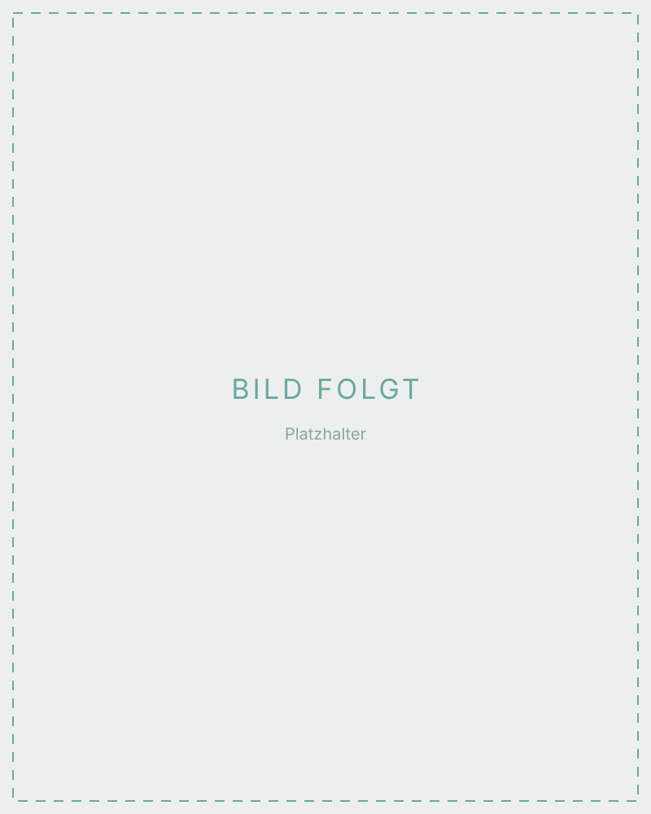

Halloween, festivals & corporate events
Face art for adults.
Halloween, festivals & events.
From elegant patterns to skulls, scars and wounds — professionally painted, skin-friendly and done in just a few minutes.
Three worlds — one craft

Halloween & horror
Skulls, scars, wounds and zombie looks. Realistically worked, but without latex or special adhesives — skin-friendly and washed off again within minutes.
Festival & party
Glitter, colour gradients, graphic masks and ornaments. Matched to the outfit, sweat-proof and photogenic.
Corporate & themed parties
Halloween drinks, themed party or anniversary: a face painting area for adults brings movement into the evening and delivers pictures for your social channels.
The designs listed here are examples — the category keeps growing. Tell me your theme and the right design takes shape as we talk it through.
Glitter tattoos
Glitter tattoos are applied with a stencil, skin-friendly glue and cosmetic glitter. Finished in around two minutes, they last several days and survive showering and swimming.
At a festival, at a party or as a quick addition to a painted face — also for guests who would rather not have their whole face painted.
Waterproof & skin-friendly
I use cosmetic glitter and a skin-friendly adhesive. The design can be removed at any time with oil.
Everything included — ready to go
-
I come to you
Zurich, Dübendorf and the surrounding area. I bring the table, chair, lighting and colours; after around 10 minutes of setup we can start.
-
Pace for a lot of guests
Depending on the detail, 6–8 faces per hour. Small designs and glitter tattoos are considerably faster.
-
Skin-friendly and vegan
Exclusively cosmetically approved colours, vegan and free of animal testing. For sensitive skin there is a test patch on the arm beforehand.
-
Removes without a trace
All designs come off with soap and water, glitter tattoos with oil. No latex, no special adhesive.
Halloween & face art for adults — your questions
FAQ
A whole evening. Once the colours have dried they are smudge-proof and survive dancing too. Afterwards they come off with soap and water.
No. I work with cosmetic colours and thickeners. That creates scars and wounds with real depth, yet stays skin-friendly and comes off without a trace.
6–8 faces for elaborate designs, considerably more for small designs and glitter tattoos. For larger events we plan the timing together in advance.
CHF 145 per hour, plus CHF 1/km travel from 8600 Dübendorf. For longer bookings and corporate events I am happy to put together an individual quote.
Halloween, festival or corporate event?
Tell me about your occasion — I will get back to you with a suggestion.